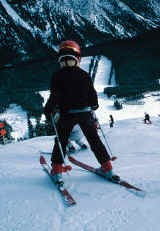

Ideális pálya minden sízőnek
White Valley hófödte csúcsa izgalmas síprogramokkal várja a sportolni vágyókat. Kezdőknek való lejtőitől lavinaveszélyes jelöletlen meredélyjeiig, minden látogató megtalálja a leginkább kedvére való terepet.
A nem kevesebb, mint 105 pályát 75 sílift szolgálja ki. White Valley sokféle szálláslehetőséget és számos egyéb szabadidős programot kínál.